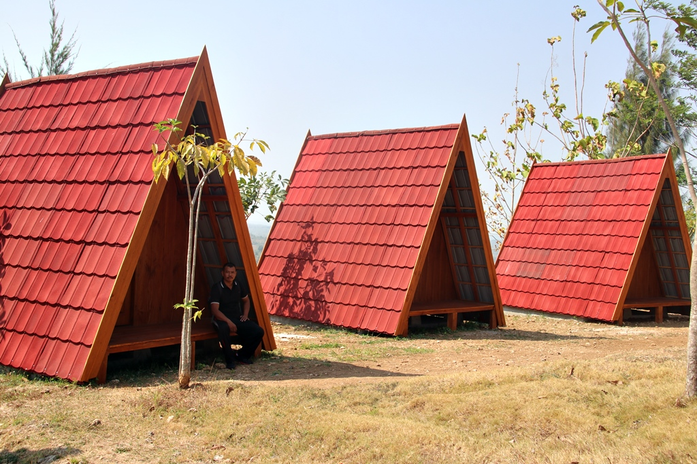

Sejarah Blora
Menurut cerita rakyat Blora berasal dari kata belor yang berarti lumpur, kemudian berkembang menjadi mbeloran yang akhirnya sampai sekarang lebih dikenal dengan nama blora
Secara etimologi Blora berasal dari kata wai + lorah. Wai berarti air, dan lorah berarti jurang atau tanah rendah. Dalam bahasa Jawa sering terjadi pergantian atau pertukaran huruf W dengan huruf B, tanpa menyebabkan perubahan arti kata. Sehingga seiring dengan perkembangan zaman kata wailorah menjadi bailorah, dari bailorah menjadi balora dan kata balora akhirnya menjadi blora
Geografis Blora
Wilayah Kabupaten Blora terdiri atas dataran rendah dan perbukitan dengan ketinggian 20-280 meter dpl. Bagian utara merupakan kawasan perbukitan, bagian dari rangkaian Pegunungan Kapur Utara. Bagian selatan berupa dataran rendah. Ibu kota kabupaten Blora sendiri terletak di cekungan Pegunungan Kapur Utara.
Separuh dari wilayah Kabupaten Blora merupakan kawasan hutan, terutama di bagian utara, timur, dan selatan. Dataran rendah di bagian tengah umumnya merupakan areal persawahan
Sebagian besar wilayah Kabupaten Blora merupakan daerah krisis air (baik untuk air minum maupun untuk irigasi) pada musim kemarau, terutama di daerah pegunungan kapur. Sementara pada musim penghujan, rawan banjir longsor di sejumlah kawasan.
Wisata Blora
Blora memiliki berbagai tempat wisata, mulai waduk, goa, dan perbukitan, tentu wisata tersebut sangat menarik bagi pengunjung.
Waduk Greneng

Daya Tarik Wisata Waduk Greneng terletak di Dukuh Greneng Desa Tunjungan Kecamatan Tunjungan Kabupaten Blora, kurang lebih 12 km ke arah barat laut dari pusat kota Blora. Waduk Greneng ini mempunyai pemandangan yang sangat indah dengan hamparan luas ± 45 Ha berlatar belakang Hutan Jati wilayah KPH Mantingan.
Puncak Pencu
Puncak pencu terletak di dataran tinggi dari Blora, sekitar 400 m di atas permukaan laut, tepatnya di Gandu desa sekitar 20 km dari Blora. mengunjungi tempat ini, wisatawan dapat menikmati indah pemandangan hijau. Hal ini menjadi tempat terbaik untuk mengambil gambar selfie dengan Kendeng Utara latar belakang daerah pegunungan
Bukit Kunci

Bagi warga yang ingin menikmati suasana malam jauh dari kebisingan dan keramaian, Bukit Kunci menjadi salah satu alternatif untuk merelaksasi. Glamping, merupakan aktivitas berkemah dengan gaya yang lebih mewah dan nyaman daripada kegiatan berkemah di tenda.
Goa Terawang
Goa Terawang Todanan di Kedung wungu Blora Jawa tengah adalah salah satu tempat wisata yang berada di desa kedung wungu, kecamatan todanan, kabupaten blora, provinsi jawa tengah, negara indonesia.Tempat ini sangat indah dan bisa memberikan sensasi yang berbeda dengan aktivitas kita sehari hari. wisata Goa Terawang Todanan di Kedung wungu Blora Jawa tengah memiliki pesona keindahan yang sangat menarik untuk dikunjungi.